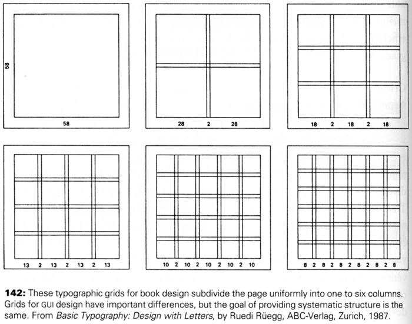
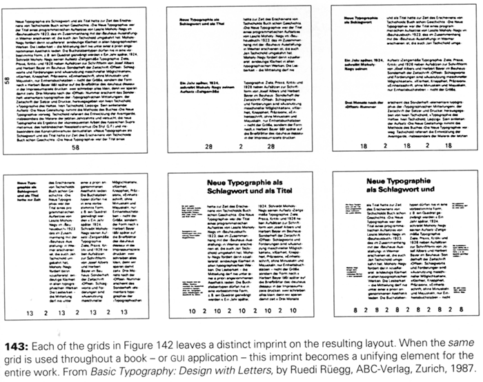
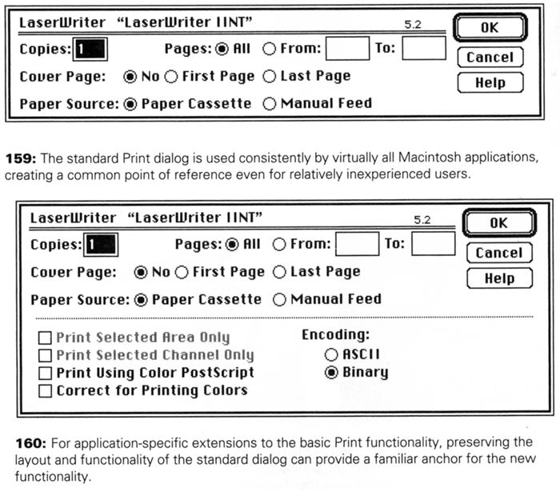
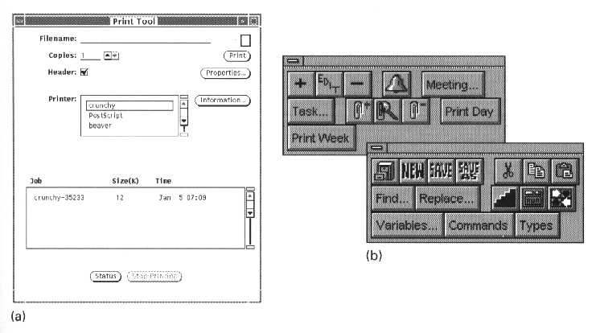
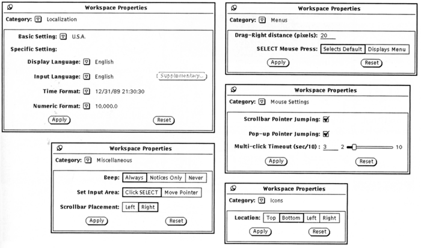
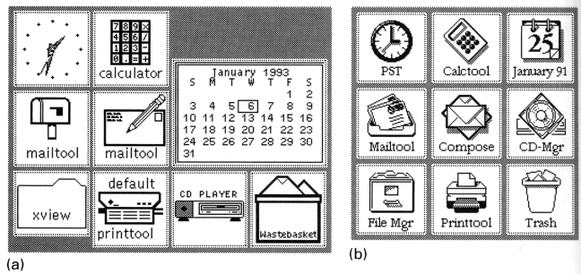
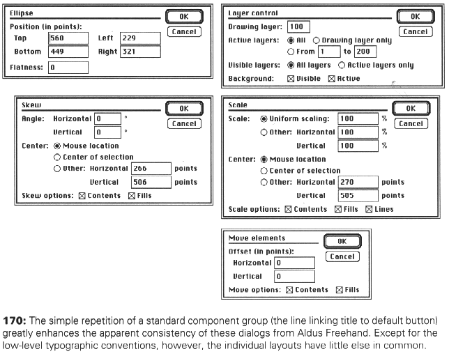
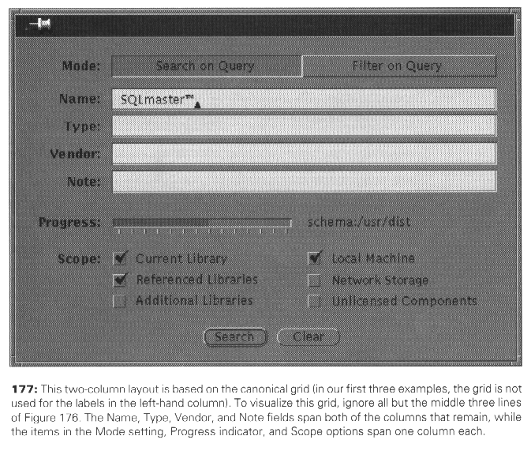
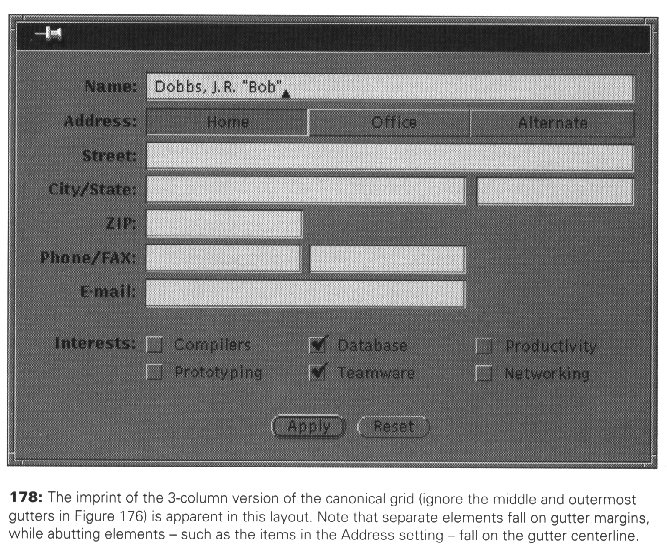
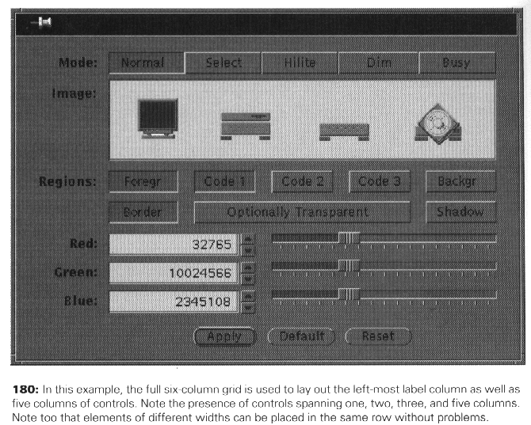

Module & Program
(material from: Designing Visual Interfaces by
Mullet and Sano)
"The module is a scale of proportions that makes the bad
difficult and the good easy" Albert Einstein
previously we talked about windows and dialogue boxes in
isolation.
Here we talk about the development of 'programs' -
comprehensive systems of organization - based on repeated sizes
and proportions (module) or on forms and ideas (theme) to bring
regularity and structure
Benefits of a systematic approach:
- structure -
module reflects structural requirements, and consistent
application of module reinforces structure
- predictability
- prepare the user to respond to a small number of familiar
patterns in a predictable way
- efficiency -
can produce large quantities of high quality output in little
time with little expertise
Grid Based Design


Here is a nice article: http://www.graphic-design.com/DTG/Design/standards.html
and http://www.designer-daily.com/the-use-of-grids-in-website-design-6639
take the static layout principles from the last lecture
and turn them into an overall structure for an entire system
divide the screen into a small number of primitive units
along each dimension and permits important structural elements to
be placed consistently
Principles:
- Focus
- Flexibility
- Consistent Application

Common Errors:
arbitrary component dimensions

random window sizes

unrelated icon sizes and imagery

inconsistent control presentations

Techniques:
- reinforcing structure through repetition
- establishing modular units
- creating grid-based layout programs
Repetition:
- start with rough sketches of the series of layouts to be
produced
- look for common margins or functional units. Individual
displays should be adjusted to ensure consistent positioning of
major structural elements
- look for widely spaced elements that should be visually
related but which cannot be positioned next to one another
- look for paths the user's eye needs to follow through the
display. Repeated structural elements can serve as landmarks
- use standard locations and a consistent presentation style for
rules, text, or images
Modular Units:
- determine the vertical unit. In GUI design this means defining
the standard control height and the spacing between
control.
- the vertical unit should allow any two controls to be placed
next to one another, and should provide for proper spacing of
multi-line controls, multi-control groups, and separations
between groups.
- determine the horizontal unit. The unit should be large enough
to accommodate most of the one-word labels in the design space
and should be at least three times as wide as the vertical unit.
- the optimum horizontal unit should provide 5-7 divisions of
the typical display width and should be easy to factor evenly
into partial or multiple units.
Grid-based Design:
- determine any size restrictions on the area to be laid out
- determine the basic vertical and horizontal modules. the
vertical module is determined by the widget set, while the
horizontal module is determined by the number of controls (and
sometimes by the lengths of their labels). These parameters
define precisely the grid that will be used
- develop a rough layout sketch that approximates the sizes,
positions, and orientations of the relevant control elements
- use the grid to adjust the sizes and positions of elements
across rows. Short elements are extended to begin and end on
grid boundaries, while long elements are allowed to span
multiple grid units or are shortened to fit within the standard
unit. The grid helps establish consistent alignment
relationships.
- for dynamic layouts, identify the minimum size that can be
accommodated by the layout. This is better than trying to
recompute the layout for arbitrarily small display sizes.




and now lets look at applying this to your revised design for
project 2.
By the end of the class someone in your group should
email me drawings from your design showing how you are using a
grid-based layout for your screens - you may want to use some qml
elements to do this
On Thursday we will spend some time in groups working on project 2
in relation to some of the earlier lectures
First you should explain how your design supports diversity of
users and tasks
diversity of users
- User
Profile
- age,
gender, preferred language, education, cultural background,
job
- novice
/ first time users
- novice
- know little of task or interface concepts
- first
time users - have task concepts but shallow knowledge of
interface
- need
to be able to accomplish basic needs with small number of
consistent actions
- knowledgeable
intermittent users
- know
about the task and general knowledge about the interface -
will forget specific features
- need
to easily rediscover how to perform tasks
- expert
frequent users
- thoroughly
familiar with task and interface concepts
- need
ability to quickly carry out actions, get rapid repsonses,
brief feedback
diversity of tasks
- determine
set of tasks early in design
- choose
'atomic' actions
- look at
task frequencies
last updated 3/10/2012